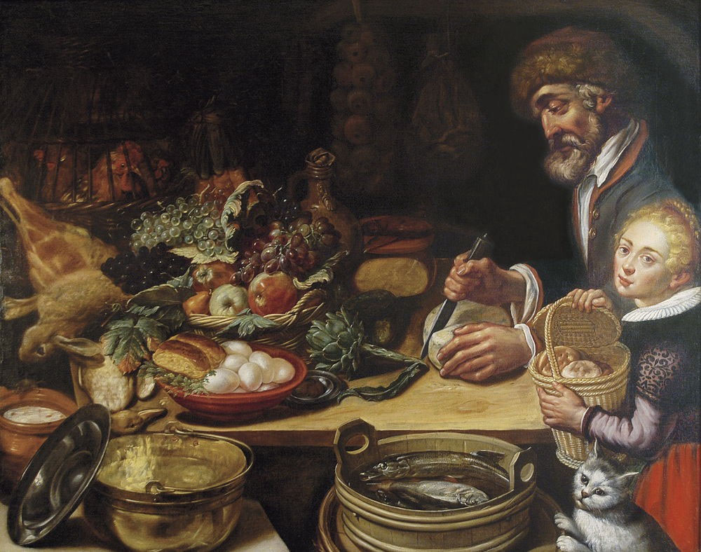

La historia de la gastronomía es un relato fascinante que refleja la evolución de la humanidad a través de sus hábitos alimentarios. Desde los primeros cazadores-recolectores, que dependían de lo que la naturaleza les proporcionaba, hasta la sofisticación de las sociedades modernas, la gastronomía ha sido una parte esencial de la cultura humana. En la antigüedad, civilizaciones como la egipcia, griega y romana ya mostraban una gran diversidad en sus prácticas culinarias, influenciadas por los recursos locales y los intercambios comerciales. Con la Edad Media, las rutas comerciales y los descubrimientos de nuevos ingredientes transformaron la cocina europea, mientras que la llegada de las especias de Asia y África enriqueció los platos.

En el Renacimiento, la gastronomía se profesionalizó y empezó a consolidarse como arte, con la influencia de chefs que escribían tratados y recetarios. La Revolución Industrial trajo consigo avances en la producción de alimentos, haciendo que las técnicas culinarias se popularizaran y diversificaran. Ya en tiempos modernos, la globalización y el acceso a productos internacionales han permitido una mezcla de tradiciones gastronómicas que sigue evolucionando, mientras que la cocina continúa como un reflejo de la identidad cultural y el ingenio humano.
